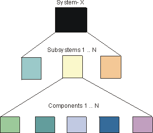
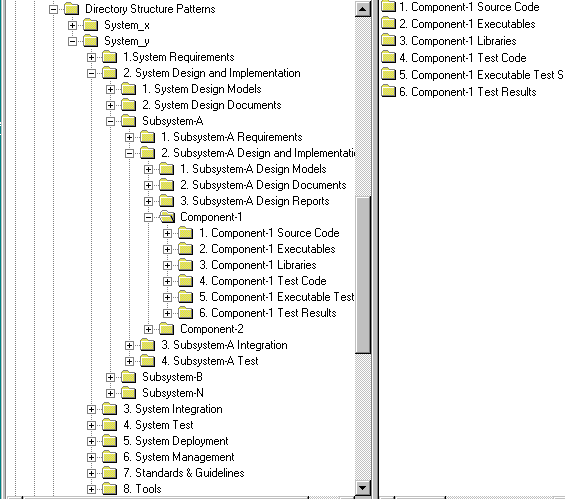

Concepts:
Product Directory Structure
The Product Directory Structure serves as a logically nested placeholder for all
versionable product-related artifacts. Artifacts are produced as result of the
following development process lifecycle and for the development of each
constituent part (component) of the
overall system.
The following figure shows that System-X consists of "N" subsystems
and each subsystem consists of "N" components. The
Product Directory Structure provides a common placeholder for the various
artifacts that are required for the development of each part of the overall
system.

Topics
In the Rational Unified Process artifacts are grouped and described in terms
of information sets. The information sets are:
Projects could organize artifacts by information set, however, that would not
take into account how the overall system is to be developed and then assembled
from its constituent parts. The Product Directory Structure is logically
structured to show how components are nested and has the essential information required to create them in an overall context of a system or subsystem.
The Product Directory Structure is a placeholder framework and provides a
navigational map to all project-related artifacts. The artifacts could be physically
placed within the various directories or they could be referenced from given
locations.
Although an experienced software architect may have a good idea of system composition
at the outset, the view of major developmental components emerges as a result of
Analysis & Design-related activities to define and refine candidate
architectures.
The following table provides a Product System Directory Structure pattern
that could be used as a "Product Directory Structure" in the initial phases of
project development whereas the precise details of composite subsystems and
architectural layering has yet to be determined.
Once Analysis & Design activities are underway, and there is
an improved understanding about the number and nature of subsystems required in the
overall system (Activity: Subsystem Design), the Product Directory Structure
needs to be expanded to accommodate each subsystem.
The information in the System Product Directory Structure needs
to be visible to all subsystems across the project. So apart from the product
management, requirements and test information Standards and Guidelines would
belong in the System Product Directory Structure. In this instance, Tools are
included in the System Product Directory Structure, however, they could be in a
higher level directory where a number of Systems could be using the same
toolset.
The information in the Product Subsystem Directory Structure
relates directly to the development of that particular subsystem. The number of
'instantiations' of the Subsystems Product Directory Structure is clearly
related to number of subsystems decided upon as a result of the
Analysis&Design activities.
As shown in the following figure (Drilling to the
Executables), System-y has three subsystems (Subsystem-A, Subsystem-B and
Subsystem-N). Each subsystem has the necessary information for its design and,
eventual, implementation.
Drilling to the Executables

A generalized breakdown of the Subsystem Product Directory
Structure is as follows:
The number of components is a result of subsystem design decisions.
The following directory structure needs to be instantiated for each component
to be developed.
One benefit of nesting directories in the prescribed manner is
that all relevant contextual information on the development of a component is
available, either at the same level, or the level above.
This type of logical nesting gives rise to the setting up of
development and integration workspaces that can
linked to the overall development
team structure.
The naming convention for artifacts is described in Activity:
Establish CM Policies at step Define Configuration
Identification Practices
Copyright
© 1987 - 2001 Rational Software Corporation
|  Disciplines >
Disciplines >
 Configuration & Change Management >
Configuration & Change Management >
 Concepts >
Concepts >